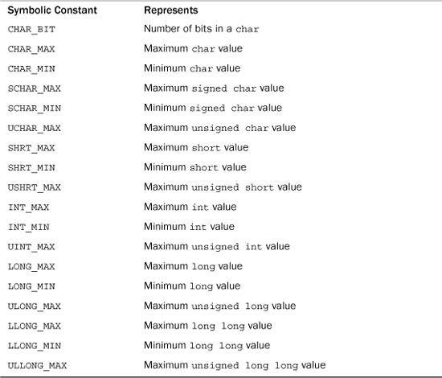
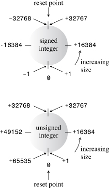
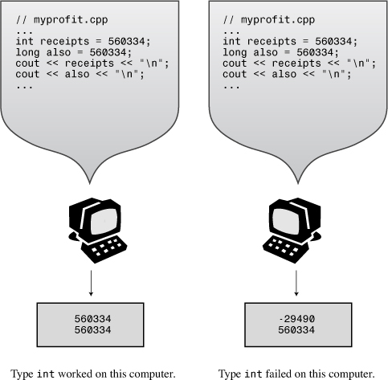
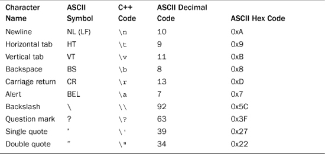
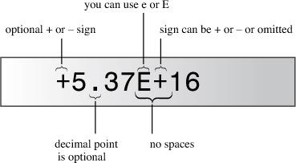
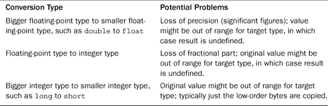

In this chapter you’ll learn about the following:
• Rules for naming C++ variables
• C++’s built-in integer types: unsigned long, long, unsigned int, int, unsigned short, short, char, unsigned char, signed char, bool
• C++11’s additions: unsigned long long and long long
• The climits file, which represents system limits for various integer types
• Numeric literals (constants) of various integer types
• Using the const qualifier to create symbolic constants
• C++’s built-in floating-point types: float, double, and long double
• The cfloat file, which represents system limits for various floating-point types
• Numeric literals of various floating-point types
• C++’s arithmetic operators
• Automatic type conversions
• Forced type conversions (type casts)
The essence of object-oriented programming (OOP) is designing and extending your own data types. Designing your own data types represents an effort to make a type match the data. If you do this properly, you’ll find it much simpler to work with the data later. But before you can create your own types, you must know and understand the types that are built in to C++ because those types will be your building blocks.
The built-in C++ types come in two groups: fundamental types and compound types. In this chapter you’ll meet the fundamental types, which represent integers and floating-point numbers. That might sound like just two types; however, C++ recognizes that no one integer type and no one floating-point type match all programming requirements, so it offers several variants on these two data themes. Chapter 4, “Compound Types,” follows up by covering several types that are built on the basic types; these additional compound types include arrays, strings, pointers, and structures.
Of course, a program also needs a means to identify stored data. In this chapter you’ll examine one method for doing so—using variables. Then you’ll look at how to do arithmetic in C++. Finally, you’ll see how C++ converts values from one type to another.
Programs typically need to store information—perhaps the current price of Google stock, the average humidity in New York City in August, the most common letter in the U.S. Constitution and its relative frequency, or the number of available Elvis impersonators. To store an item of information in a computer, the program must keep track of three fundamental properties:
• Where the information is stored
• What value is kept there
• What kind of information is stored
The strategy the examples in this book have used so far is to declare a variable. The type used in the declaration describes the kind of information, and the variable name represents the value symbolically. For example, suppose Chief Lab Assistant Igor uses the following statements:
int braincount;
braincount = 5;
These statements tell the program that it is storing an integer and that the name braincount represents the integer’s value, 5 in this case. In essence, the program locates a chunk of memory large enough to hold an integer, notes the location, and copies the value 5 into the location. You then can use braincount later in your program to access that memory location. These statements don’t tell you (or Igor) where in memory the value is stored, but the program does keep track of that information, too. Indeed, you can use the & operator to retrieve braincount’s address in memory. You’ll learn about that operator in the next chapter, when you investigate a second strategy for identifying data—using pointers.
C++ encourages you to use meaningful names for variables. If a variable represents the cost of a trip, you should call it cost_of_trip or costOfTrip, not just x or cot. You do have to follow a few simple C++ naming rules:
• The only characters you can use in names are alphabetic characters, numeric digits, and the underscore (_) character.
• The first character in a name cannot be a numeric digit.
• Uppercase characters are considered distinct from lowercase characters.
• You can’t use a C++ keyword for a name.
• Names beginning with two underscore characters or with an underscore character followed by an uppercase letter are reserved for use by the implementation—that is, the compiler and the resources it uses. Names beginning with a single underscore character are reserved for use as global identifiers by the implementation.
• C++ places no limits on the length of a name, and all characters in a name are significant. However, some platforms might have their own length limits.
The next-to-last point is a bit different from the preceding points because using a name such as __time_stop or _Donut doesn’t produce a compiler error; instead, it leads to undefined behavior. In other words, there’s no telling what the result will be. The reason there is no compiler error is that the names are not illegal but rather are reserved for the implementation to use. The bit about global names refers to where the names are declared; Chapter 4 touches on that topic.
The final point differentiates C++ from ANSI C (C99), which guarantees only that the first 63 characters in a name are significant. (In ANSI C, two names that have the same first 63 characters are considered identical, even if the 64th characters differ.)
Here are some valid and invalid C++ names:
int poodle; // valid
int Poodle; // valid and distinct from poodle
int POODLE; // valid and even more distinct
Int terrier; // invalid -- has to be int, not Int
int my_stars3 // valid
int _Mystars3; // valid but reserved -- starts with underscore
int 4ever; // invalid because starts with a digit
int double; // invalid -- double is a C++ keyword
int begin; // valid -- begin is a Pascal keyword
int __fools; // valid but reserved -- starts with two underscores
int the_very_best_variable_i_can_be_version_112; // valid
int honky-tonk; // invalid -- no hyphens allowed
If you want to form a name from two or more words, the usual practice is to separate the words with an underscore character, as in my_onions, or to capitalize the initial character of each word after the first, as in myEyeTooth. (C veterans tend to use the underscore method in the C tradition, whereas those raised in the Pascal tradition prefer the capitalization approach.) Either form makes it easier to see the individual words and to distinguish between, say, carDrip and cardRip, or boat_sport and boats_port.
Integers are numbers with no fractional part, such as 2, 98, –5286, and 0. There are lots of integers, assuming that you consider an infinite number to be a lot, so no finite amount of computer memory can represent all possible integers. Thus, a language can represent only a subset of all integers. Some languages offer just one integer type (one type fits all!), but C++ provides several choices. This gives you the option of choosing the integer type that best meets a program’s particular requirements. This concern with matching type to data presages the designed data types of OOP.
The various C++ integer types differ in the amount of memory they use to hold an integer. A larger block of memory can represent a larger range in integer values. Also some types (signed types) can represent both positive and negative values, whereas others (unsigned types) can’t represent negative values. The usual term for describing the amount of memory used for an integer is width. The more memory a value uses, the wider it is. C++’s basic integer types, in order of increasing width, are char, short, int, long, and, with C++11, long long. Each comes in both signed and unsigned versions. That gives you a choice of ten different integer types! Let’s look at these integer types in more detail. Because the char type has some special properties (it’s most often used to represent characters instead of numbers), this chapter covers the other types first.
short, int, long, and long long Integer TypesComputer memory consists of units called bits. (See the “Bits and Bytes” sidebar later in this chapter.) By using different numbers of bits to store values, the C++ types short, int, long, and long long can represent up to four different integer widths. It would be convenient if each type were always some particular width for all systems—for example, if short were always 16 bits, int were always 32 bits, and so on. But life is not that simple. No one choice is suitable for all computer designs. C++ offers a flexible standard with some guaranteed minimum sizes, which it takes from C. Here’s what you get:
• A short integer is at least 16 bits wide.
• An int integer is at least as big as short.
• A long integer is at least 32 bits wide and at least as big as int.
• A long long integer is at least 64 bits wide and at least as big as long.
Many systems currently use the minimum guarantee, making short 16 bits and long 32 bits. This still leaves several choices open for int. It could be 16, 24, or 32 bits in width and meet the standard. It could even be 64 bits, providing that long and long long are at least that wide. Typically, int is 16 bits (the same as short) for older IBM PC implementations and 32 bits (the same as long) for Windows XP, Windows Vista, Windows 7, Macintosh OS X, VAX, and many other minicomputer implementations. Some implementations give you a choice of how to handle int. (What does your implementation use? The next example shows you how to determine the limits for your system without your having to open a manual.) The differences between implementations for type widths can cause problems when you move a C++ program from one environment to another, including using a different compiler on the same system. But a little care, as discussed later in this chapter, can minimize those problems.
You use these type names to declare variables just as you would use int:
short score; // creates a type short integer variable
int temperature; // creates a type int integer variable
long position; // creates a type long integer variable
Actually, short is short for short int and long is short for long int, but hardly anyone uses the longer forms.
The four types—int, short, long, and long long—are signed types, meaning each splits its range approximately equally between positive and negative values. For example, a 16-bit int might run from –32,768 to +32,767.
If you want to know how your system’s integers size up, you can use C++ tools to investigate type sizes with a program. First, the sizeof operator returns the size, in bytes, of a type or a variable. (An operator is a built-in language element that operates on one or more items to produce a value. For example, the addition operator, represented by +, adds two values.) Recall that the meaning of byte is implementation dependent, so a 2-byte int could be 16 bits on one system and 32 bits on another. Second, the climits header file (or, for older implementations, the limits.h header file) contains information about integer type limits. In particular, it defines symbolic names to represent different limits. For example, it defines INT_MAX as the largest possible int value and CHAR_BIT as the number of bits in a byte. Listing 3.1 demonstrates how to use these facilities. The program also illustrates initialization, which is the use of a declaration statement to assign a value to a variable.
// limits.cpp -- some integer limits
#include <iostream>
#include <climits> // use limits.h for older systems
int main()
{
using namespace std;
int n_int = INT_MAX; // initialize n_int to max int value
short n_short = SHRT_MAX; // symbols defined in climits file
long n_long = LONG_MAX;
long long n_llong = LLONG_MAX;
// sizeof operator yields size of type or of variable
cout << "int is " << sizeof (int) << " bytes." << endl;
cout << "short is " << sizeof n_short << " bytes." << endl;
cout << "long is " << sizeof n_long << " bytes." << endl;
cout << "long long is " << sizeof n_llong << " bytes." << endl;
cout << endl;
cout << "Maximum values:" << endl;
cout << "int: " << n_int << endl;
cout << "short: " << n_short << endl;
cout << "long: " << n_long << endl;
cout << "long long: " << n_llong << endl << endl;
cout << "Minimum int value = " << INT_MIN << endl;
cout << "Bits per byte = " << CHAR_BIT << endl;
return 0;
}
If your system doesn’t support the long_long type, you should remove the lines using that type.
Here is sample output from the program in Listing 3.1:
int is 4 bytes.
short is 2 bytes.
long is 4 bytes.
long long is 8 bytes.
Maximum values:
int: 2147483647
short: 32767
long: 2147483647
long long: 9223372036854775807
Minimum int value = -2147483648
Bits per byte = 8
These particular values came from a system running 64-bit Windows 7.
The following sections look at the chief programming features for this program.
sizeof Operator and the climits Header FileThe sizeof operator reports that int is 4 bytes on the base system, which uses an 8-bit byte. You can apply the sizeof operator to a type name or to a variable name. When you use the sizeof operator with a type name, such as int, you enclose the name in parentheses. But when you use the operator with the name of the variable, such as n_short, parentheses are optional:
cout << "int is " << sizeof (int) << " bytes.\n";
cout << "short is " << sizeof n_short << " bytes.\n";
The climits header file defines symbolic constants (see the sidebar, “Symbolic Constants the Preprocessor Way,” later in this chapter) to represent type limits. As mentioned previously, INT_MAX represents the largest value type int can hold; this turned out to be 2,147,483,647 for our Windows 7 system. The compiler manufacturer provides a climits file that reflects the values appropriate to that compiler. For example, the climits file for some older systems that used a 16-bit int, defines INT_MAX to represent 32,767. Table 3.1 summarizes the symbolic constants defined in the climits file; some pertain to types you have not yet learned.
Table 3.1. Symbolic Constants from climits

Initialization combines assignment with declaration. For example, the following statement declares the n_int variable and sets it to the largest possible type int value:
int n_int = INT_MAX;
You can also use literal constants, such as 255, to initialize values. You can initialize a variable to another variable, provided that the other variable has been defined first. You can even initialize a variable to an expression, provided that all the values in the expression are known when program execution reaches the declaration:
int uncles = 5; // initialize uncles to 5
int aunts = uncles; // initialize aunts to 5
int chairs = aunts + uncles + 4; // initialize chairs to 14
Moving the uncles declaration to the end of this list of statements would invalidate the other two initializations because then the value of uncles wouldn’t be known at the time the program tries to initialize the other variables.
The initialization syntax shown previously comes from C; C++ has an initialization syntax that is not shared with C:
int owls = 101; // traditional C initialization, sets owls to 101
int wrens(432); // alternative C++ syntax, set wrens to 432
If you don’t initialize a variable that is defined inside a function, the variable’s value is indeterminate. That means the value is whatever happened to be sitting at that memory location prior to the creation of the variable.
If you know what the initial value of a variable should be, initialize it. True, separating the declaring of a variable from assigning it a value can create momentary suspense:
short year; // what could it be?
year = 1492; // oh
But initializing the variable when you declare it protects you from forgetting to assign the value later.
There’s another format for initialization that’s used with arrays and structures but in C++98 can also be used with single-valued variables:
int hamburgers = {24}; // set hamburgers to 24
Using a braced initializer for a single-valued variable hasn’t been particularly common, but the C++11 standard is extending it some ways. First, it can be used with or without the = sign:
int emus{7}; // set emus to 5
int rheas = {12}; // set rheas to 12
Second, the braces can be left empty, in which case the variable is initialized to 0:
int rocs = {}; // set rocs to 0
int psychics{}; // set psychics to 0
Third, it provides better protection against type conversion errors, a topic we’ll return to near the end of this chapter.
Why, you may ask with good reason, does the language need more alternatives? As odd as it may seem, the reason is to make using C++ easier for the novice. In the past, C++ has used different forms of initialization for different types, and the form used to initialize class variables was different from the form used for ordinary structures—and that, in turn, was different from the form usually used for simple variables such as we have been using. C++ added the parentheses form of initialization to make initializing ordinary variables more like initializing class variables. C++11 makes it possible to use the braces syntax (with or without the =) with all types—a universal initialization syntax. In the future, texts may introduce you to initialization using the brace forms and mention the other forms as historical oddities retained for backward compatibility.
Each of the four integer types you just learned about comes in an unsigned variety that can’t hold negative values. This has the advantage of increasing the largest value the variable can hold. For example, if short represents the range –32,768 to +32,767, the unsigned version can represent the range 0 to 65,535. Of course, you should use unsigned types only for quantities that are never negative, such as populations, bean counts, and happy face manifestations. To create unsigned versions of the basic integer types, you just use the keyword unsigned to modify the declarations:
unsigned short change; // unsigned short type
unsigned int rovert; // unsigned int type
unsigned quarterback; // also unsigned int
unsigned long gone; // unsigned long type
unsigned long long lang_lang; // unsigned long long type
Note that unsigned by itself is short for unsigned int.
Listing 3.2 illustrates the use of unsigned types. It also shows what might happen if your program tries to go beyond the limits for integer types. Finally, it gives you one last look at the preprocessor #define statement.
// exceed.cpp -- exceeding some integer limits
#include <iostream>
#define ZERO 0 // makes ZERO symbol for 0 value
#include <climits> // defines INT_MAX as largest int value
int main()
{
using namespace std;
short sam = SHRT_MAX; // initialize a variable to max value
unsigned short sue = sam;// okay if variable sam already defined
cout << "Sam has " << sam << " dollars and Sue has " << sue;
cout << " dollars deposited." << endl
<< "Add $1 to each account." << endl << "Now ";
sam = sam + 1;
sue = sue + 1;
cout << "Sam has " << sam << " dollars and Sue has " << sue;
cout << " dollars deposited.\nPoor Sam!" << endl;
sam = ZERO;
sue = ZERO;
cout << "Sam has " << sam << " dollars and Sue has " << sue;
cout << " dollars deposited." << endl;
cout << "Take $1 from each account." << endl << "Now ";
sam = sam - 1;
sue = sue - 1;
cout << "Sam has " << sam << " dollars and Sue has " << sue;
cout << " dollars deposited." << endl << "Lucky Sue!" << endl;
return 0;
}
Here’s the output from the program in Listing 3.2:
Sam has 32767 dollars and Sue has 32767 dollars deposited.
Add $1 to each account.
Now Sam has -32768 dollars and Sue has 32768 dollars deposited.
Poor Sam!
Sam has 0 dollars and Sue has 0 dollars deposited.
Take $1 from each account.
Now Sam has -1 dollars and Sue has 65535 dollars deposited.
Lucky Sue!
The program sets a short variable (sam) and an unsigned short variable (sue) to the largest short value, which is 32,767 on our system. Then it adds 1 to each value. This causes no problems for sue because the new value is still much less than the maximum value for an unsigned integer. But sam goes from 32,767 to –32,768! Similarly, subtracting 1 from 0 creates no problems for sam, but it makes the unsigned variable sue go from 0 to 65,535. As you can see, these integers behave much like an odometer. If you go past the limit, the values just start over at the other end of the range (see Figure 3.1). C++ guarantees that unsigned types behave in this fashion. However, C++ doesn’t guarantee that signed integer types can exceed their limits (overflow and underflow) without complaint, but that is the most common behavior on current implementations.
Figure 3.1. Typical overflow behavior for integers.

With the richness of C++ integer types, which should you use? Generally, int is set to the most “natural” integer size for the target computer. Natural size refers to the integer form that the computer handles most efficiently. If there is no compelling reason to choose another type, you should use int.
Now look at reasons why you might use another type. If a variable represents something that is never negative, such as the number of words in a document, you can use an unsigned type; that way the variable can represent higher values.
If you know that the variable might have to represent integer values too great for a 16-bit integer, you should use long. This is true even if int is 32 bits on your system. That way, if you transfer your program to a system with a 16-bit int, your program won’t embarrass you by suddenly failing to work properly (see Figure 3.2). And if a mere two billion is inadequate for your needs, you can move up to long long.
Figure 3.2. For portability, use long for big integers.

Using short can conserve memory if short is smaller than int. Most typically, this is important only if you have a large array of integers. (An array is a data structure that stores several values of the same type sequentially in memory.) If it is important to conserve space, you should use short instead of int, even if the two are the same size. Suppose, for example, that you move your program from a 16-bit int system to a 32-bit int system. That doubles the amount of memory needed to hold an int array, but it doesn’t affect the requirements for a short array. Remember, a bit saved is a bit earned.
If you need only a single byte, you can use char. We’ll examine that possibility soon.
An integer literal, or constant, is one you write out explicitly, such as 212 or 1776. C++, like C, lets you write integers in three different number bases: base 10 (the public favorite), base 8 (the old Unix favorite), and base 16 (the hardware hacker’s favorite). Appendix A, “Number Bases,” describes these bases; here we’ll look at the C++ representations. C++ uses the first digit or two to identify the base of a number constant. If the first digit is in the range 1–9, the number is base 10 (decimal); thus 93 is base 10. If the first digit is 0 and the second digit is in the range 1–7, the number is base 8 (octal); thus 042 is octal and equal to 34 decimal. If the first two characters are 0x or 0X, the number is base 16 (hexadecimal); thus 0x42 is hex and equal to 66 decimal. For hexadecimal values, the characters a–f and A–F represent the hexadecimal digits corresponding to the values 10–15. 0xF is 15 and 0xA5 is 165 (10 sixteens plus 5 ones). Listing 3.3 is tailor-made to show the three bases.
// hexoct1.cpp -- shows hex and octal literals
#include <iostream>
int main()
{
using namespace std;
int chest = 42; // decimal integer literal
int waist = 0x42; // hexadecimal integer literal
int inseam = 042; // octal integer literal
cout << "Monsieur cuts a striking figure!\n";
cout << "chest = " << chest << " (42 in decimal)\n";
cout << "waist = " << waist << " (0x42 in hex)\n";
cout << "inseam = " << inseam << " (042 in octal)\n";
return 0;
}
By default, cout displays integers in decimal form, regardless of how they are written in a program, as the following output shows:
Monsieur cuts a striking figure!
chest = 42 (42 in decimal)
waist = 66 (0x42 in hex)
inseam = 34 (042 in octal)
Keep in mind that these notations are merely notational conveniences. For example, if you belong to a vintage PC club and read that the CGA video memory segment is B000 in hexadecimal, you don’t have to convert the value to base 10 45,056 before using it in your program. Instead, you can simply use 0xB000. But whether you write the value ten as 10, 012, or 0xA, it’s stored the same way in the computer—as a binary (base 2) value.
By the way, if you want to display a value in hexadecimal or octal form, you can use some special features of cout. Recall that the iostream header file provides the endl manipulator to give cout the message to start a new line. Similarly, it provides the dec, hex, and oct manipulators to give cout the messages to display integers in decimal, hexadecimal, and octal formats, respectively. Listing 3.4 uses hex and oct to display the decimal value 42 in three formats. (Decimal is the default format, and each format stays in effect until you change it.)
// hexoct2.cpp -- display values in hex and octal
#include <iostream>
using namespace std;
int main()
{
using namespace std;
int chest = 42;
int waist = 42;
int inseam = 42;
cout << "Monsieur cuts a striking figure!" << endl;
cout << "chest = " << chest << " (decimal for 42)" << endl;
cout << hex; // manipulator for changing number base
cout << "waist = " << waist << " (hexadecimal for 42)" << endl;
cout << oct; // manipulator for changing number base
cout << "inseam = " << inseam << " (octal for 42)" << endl;
return 0;
}
Here’s the program output for Listing 3.4:
Monsieur cuts a striking figure!
chest = 42 (decimal for 42)
waist = 2a (hexadecimal for 42)
inseam = 52 (octal for 42)
Note that code like the following doesn’t display anything onscreen:
cout << hex;
Instead, it changes the way cout displays integers. Thus, the manipulator hex is really a message to cout that tells it how to behave. Also note that because the identifier hex is part of the std namespace and the program uses that namespace, this program can’t use hex as the name of a variable. However, if you omitted the using directive and instead used std::cout, std::endl, std::hex, and std::oct, you could still use plain hex as the name for a variable.
A program’s declarations tell the C++ compiler the type of a particular integer variable. But what about constants? That is, suppose you represent a number with a constant in a program:
cout << "Year = " << 1492 << "\n";
Does the program store 1492 as an int, a long, or some other integer type? The answer is that C++ stores integer constants as type int unless there is a reason to do otherwise. Two such reasons are if you use a special suffix to indicate a particular type or if a value is too large to be an int.
First, look at the suffixes. These are letters placed at the end of a numeric constant to indicate the type. An l or L suffix on an integer means the integer is a type long constant, a u or U suffix indicates an unsigned int constant, and ul (in any combination of orders and uppercase and lowercase) indicates a type unsigned long constant. (Because a lowercase l can look much like the digit 1, you should use the uppercase L for suffixes.) For example, on a system using a 16-bit int and a 32-bit long, the number 22022 is stored in 16 bits as an int, and the number 22022L is stored in 32 bits as a long. Similarly, 22022LU and 22022UL are unsigned long. C++11 provides the ll and LL suffixes for type long long, and ull, Ull, uLL, and ULL for unsigned long long.
Next, look at size. C++ has slightly different rules for decimal integers than it has for hexadecimal and octal integers. (Here decimal means base 10, just as hexadecimal means base 16; the term decimal does not necessarily imply a decimal point.) A decimal integer without a suffix is represented by the smallest of the following types that can hold it: int, long, or long long. On a computer system using a 16-bit int and a 32-bit long, 20000 is represented as type int, 40000 is represented as long, and 3000000000 is represented as long long. A hexadecimal or octal integer without a suffix is represented by the smallest of the following types that can hold it: int, unsigned int, long, unsigned long, long long, or unsigned long long. The same computer system that represents 40000 as long represents the hexadecimal equivalent 0x9C40 as an unsigned int. That’s because hexadecimal is frequently used to express memory addresses, which intrinsically are unsigned. So unsigned int is more appropriate than long for a 16-bit address.
char Type: Characters and Small IntegersIt’s time to turn to the final integer type: char. As you probably suspect from its name, the char type is designed to store characters, such as letters and numeric digits. Now, whereas storing numbers is no big deal for computers, storing letters is another matter. Programming languages take the easy way out by using number codes for letters. Thus, the char type is another integer type. It’s guaranteed to be large enough to represent the entire range of basic symbols—all the letters, digits, punctuation, and the like—for the target computer system. In practice, many systems support fewer than 128 kinds of characters, so a single byte can represent the whole range. Therefore, although char is most often used to handle characters, you can also use it as an integer type that is typically smaller than short.
The most common symbol set in the United States is the ASCII character set, described in Appendix C, “The ASCII Character Set.” A numeric code (the ASCII code) represents each character in the set. For example, 65 is the code for the character A, and 77 is the code for the character M. For convenience, this book assumes ASCII code in its examples. However, a C++ implementation uses whatever code is native to its host system—for example, EBCDIC (pronounced “eb-se-dik”) on an IBM mainframe. Neither ASCII nor EBCDIC serve international needs that well, and C++ supports a wide-character type that can hold a larger range of values, such as are used by the international Unicode character set. You’ll learn about this wchar_t type later in this chapter.
Try the char type in Listing 3.5.
// chartype.cpp -- the char type
#include <iostream>
int main( )
{
using namespace std;
char ch; // declare a char variable
cout << "Enter a character: " << endl;
cin >> ch;
cout << "Hola! ";
cout << "Thank you for the " << ch << " character." << endl;
return 0;
}
Here’s the output from the program in Listing 3.5:
Enter a character:
M
Hola! Thank you for the M character.
The interesting thing is that you type an M, not the corresponding character code, 77. Also the program prints an M, not 77. Yet if you peer into memory, you find that 77 is the value stored in the ch variable. The magic, such as it is, lies not in the char type but in cin and cout. These worthy facilities make conversions on your behalf. On input, cin converts the keystroke input M to the value 77. On output, cout converts the value 77 to the displayed character M; cin and cout are guided by the type of variable. If you place the same value 77 into an int variable, cout displays it as 77. (That is, cout displays two 7 characters.) Listing 3.6 illustrates this point. It also shows how to write a character literal in C++: Enclose the character within two single quotation marks, as in 'M'. (Note that the example doesn’t use double quotation marks. C++ uses single quotation marks for a character and double quotation marks for a string. The cout object can handle either, but, as Chapter 4 discusses, the two are quite different from one another.) Finally, the program introduces a cout feature, the cout.put() function, which displays a single character.
// morechar.cpp -- the char type and int type contrasted
#include <iostream>
int main()
{
using namespace std;
char ch = 'M'; // assign ASCII code for M to ch
int i = ch; // store same code in an int
cout << "The ASCII code for " << ch << " is " << i << endl;
cout << "Add one to the character code:" << endl;
ch = ch + 1; // change character code in ch
i = ch; // save new character code in i
cout << "The ASCII code for " << ch << " is " << i << endl;
// using the cout.put() member function to display a char
cout << "Displaying char ch using cout.put(ch): ";
cout.put(ch);
// using cout.put() to display a char constant
cout.put('!');
cout << endl << "Done" << endl;
return 0;
}
Here is the output from the program in Listing 3.6:
The ASCII code for M is 77
Add one to the character code:
The ASCII code for N is 78
Displaying char ch using cout.put(ch): N!
Done
In the program in Listing 3.6, the notation 'M' represents the numeric code for the M character, so initializing the char variable ch to 'M' sets ch to the value 77. The program then assigns the identical value to the int variable i, so both ch and i have the value 77. Next, cout displays ch as M and i as 77. As previously stated, a value’s type guides cout as it chooses how to display that value—just another example of smart objects.
Because ch is really an integer, you can apply integer operations to it, such as adding 1. This changes the value of ch to 78. The program then resets i to the new value. (Equivalently, you can simply add 1 to i.) Again, cout displays the char version of that value as a character and the int version as a number.
The fact that C++ represents characters as integers is a genuine convenience that makes it easy to manipulate character values. You don’t have to use awkward conversion functions to convert characters to ASCII and back.
Even digits entered via the keyboard are read as characters. Consider the following sequence:
char ch;
cin >> ch;
If you type 5 and Enter, this code reads the 5 character and stores the character code for the 5 character (53 in ASCII) in ch. Now consider this code:
int n;
cin >> n;
The same input results in the program reading the 5 character and running a routine converting the character to the corresponding numeric value of 5, which gets stored in n.
Finally, the program uses the cout.put() function to display both c and a character constant.
cout.put()Just what is cout.put(), and why does it have a period in its name? The cout.put() function is your first example of an important C++ OOP concept, the member function. Remember that a class defines how to represent data and how to manipulate it. A member function belongs to a class and describes a method for manipulating class data. The ostream class, for example, has a put() member function that is designed to output characters. You can use a member function only with a particular object of that class, such as the cout object, in this case. To use a class member function with an object such as cout, you use a period to combine the object name (cout) with the function name (put()). The period is called the membership operator. The notation cout.put() means to use the class member function put() with the class object cout. You’ll learn about this in greater detail when you reach classes in Chapter 10, “Objects and Classes.” Now the only classes you have are the istream and ostream classes, and you can experiment with their member functions to get more comfortable with the concept.
The cout.put() member function provides an alternative to using the << operator to display a character. At this point you might wonder why there is any need for cout.put(). Much of the answer is historical. Before Release 2.0 of C++, cout would display character variables as characters but display character constants, such as 'M' and 'N', as numbers. The problem was that earlier versions of C++, like C, stored character constants as type int. That is, the code 77 for 'M' would be stored in a 16-bit or 32-bit unit. Meanwhile, char variables typically occupied 8 bits. A statement like the following copied 8 bits (the important 8 bits) from the constant 'M' to the variable ch:
char ch = 'M';
Unfortunately, this meant that, to cout, 'M' and ch looked quite different from one another, even though both held the same value. So a statement like the following would print the ASCII code for the $ character rather than simply display $:
cout << '$';
But the following would print the character, as desired:
cout.put('$');
Now, after Release 2.0, C++ stores single-character constants as type char, not type int. Therefore, cout now correctly handles character constants.
The cin object has a couple different ways of reading characters from input. You can explore these by using a program that uses a loop to read several characters, so we’ll return to this topic when we cover loops in Chapter 5, “Loops and Relational Expressions.”
char LiteralsYou have several options for writing character literals in C++. The simplest choice for ordinary characters, such as letters, punctuation, and digits, is to enclose the character in single quotation marks. This notation stands for the numeric code for the character. For example, an ASCII system has the following correspondences:
• 'A' is 65, the ASCII code for A.
• 'a' is 97, the ASCII code for a.
• '5' is 53, the ASCII code for the digit 5.
• ' ' is 32, the ASCII code for the space character.
• '!' is 33, the ASCII code for the exclamation point.
Using this notation is better than using the numeric codes explicitly. It’s clearer, and it doesn’t assume a particular code. If a system uses EBCDIC, then 65 is not the code for A, but 'A' still represents the character.
There are some characters that you can’t enter into a program directly from the keyboard. For example, you can’t make the newline character part of a string by pressing the Enter key; instead, the program editor interprets that keystroke as a request for it to start a new line in your source code file. Other characters have difficulties because the C++ language imbues them with special significance. For example, the double quotation mark character delimits string literals, so you can’t just stick one in the middle of a string literal. C++ has special notations, called escape sequences, for several of these characters, as shown in Table 3.2. For example, \a represents the alert character, which beeps your terminal’s speaker or rings its bell. The escape sequence \n represents a newline. And \" represents the double quotation mark as an ordinary character instead of a string delimiter. You can use these notations in strings or in character constants, as in the following examples:
Table 3.2. C++ Escape Sequence Codes

char alarm = '\a';
cout << alarm << "Don't do that again!\a\n";
cout << "Ben \"Buggsie\" Hacker\nwas here!\n";
The last line produces the following output:
Ben "Buggsie" Hacker
was here!
Note that you treat an escape sequence, such as \n, just as a regular character, such as Q. That is, you enclose it in single quotes to create a character constant and don’t use single quotes when including it as part of a string.
The escape sequence concept dates back to when people communicated with computers using the teletype, an electromechanical typewriter-printer, and modern systems don’t always honor the complete set of escape sequences. For example, some systems remain silent for the alarm character.
The newline character provides an alternative to endl for inserting new lines into output. You can use the newline character in character constant notation ('\n') or as character in a string ("\n"). All three of the following move the screen cursor to the beginning of the next line:
cout << endl; // using the endl manipulator
cout << '\n'; // using a character constant
cout << "\n"; // using a string
You can embed the newline character in a longer string; this is often more convenient than using endl. For example, the following two cout statements produce the same output:
cout << endl << endl << "What next?" << endl << "Enter a number:" << endl;
cout << "\n\nWhat next?\nEnter a number:\n";
When you’re displaying a number, endl is a bit easier to type than "\n" or '\n', but when you’re displaying a string, ending the string with a newline character requires less typing:
cout << x << endl; // easier than cout << x << "\n";
cout << "Dr. X.\n"; // easier than cout << "The Dr. X." << endl;
Finally, you can use escape sequences based on the octal or hexadecimal codes for a character. For example, Ctrl+Z has an ASCII code of 26, which is 032 in octal and 0x1a in hexadecimal. You can represent this character with either of the following escape sequences: \032 or \x1a. You can make character constants out of these by enclosing them in single quotes, as in '\032', and you can use them as parts of a string, as in "hi\x1a there".
When you have a choice between using a numeric escape sequence or a symbolic escape sequence, as in \0x8 versus \b, use the symbolic code. The numeric representation is tied to a particular code, such as ASCII, but the symbolic representation works with all codes and is more readable.
Listing 3.7 demonstrates a few escape sequences. It uses the alert character to get your attention, the newline character to advance the cursor (one small step for a cursor, one giant step for cursorkind), and the backspace character to back the cursor one space to the left. (Houdini once painted a picture of the Hudson River using only escape sequences; he was, of course, a great escape artist.)
// bondini.cpp -- using escape sequences
#include <iostream>
int main()
{
using namespace std;
cout << "\aOperation \"HyperHype\" is now activated!\n";
cout << "Enter your agent code:________\b\b\b\b\b\b\b\b";
long code;
cin >> code;
cout << "\aYou entered " << code << "...\n";
cout << "\aCode verified! Proceed with Plan Z3!\n";
return 0;
}
Some systems might behave differently, displaying the \b as a small rectangle rather than backspacing, for example, or perhaps erasing while backspacing, perhaps ignoring \a.
When you start the program in Listing 3.7, it puts the following text onscreen:
Operation "HyperHype" is now activated!
Enter your agent code:________
After printing the underscore characters, the program uses the backspace character to back up the cursor to the first underscore. You can then enter your secret code and continue. Here’s a complete run:
Operation "HyperHype" is now activated!
Enter your agent code:42007007
You entered 42007007...
Code verified! Proceed with Plan Z3!
C++ implementations support a basic source character set—that is, the set of characters you can use to write source code. It consists of the letters (uppercase and lowercase) and digits found on a standard U.S. keyboard, the symbols, such as { and =, used in the C language, and a scattering of other characters, such as the space character. Then there is a basic execution character set, which includes characters that can be processed during the execution of a program (for example, characters read from a file or displayed on screen). This adds a few more characters, such as backspace and alert. The C++ Standard also allows an implementation to offer extended source character sets and extended execution character sets. Furthermore, those additional characters that qualify as letters can be used as part of the name of an identifier. Thus, a German implementation might allow you to use umlauted vowels, and a French implementation might allow accented vowels. C++ has a mechanism for representing such international characters that is independent of any particular keyboard: the use of universal character names.
Using universal character names is similar to using escape sequences. A universal character name begins either with \u or \U. The \u form is followed by 8 hexadecimal digits, and the \U form by 16 hexadecimal digits. These digits represent the ISO 10646 code point for the character. (ISO 10646 is an international standard under development that provides numeric codes for a wide range of characters. See “Unicode and ISO 10646,” later in this chapter.)
If your implementation supports extended characters, you can use universal character names in identifiers, as character constants, and in strings. For example, consider the following code:
int k\u00F6rper;
cout << "Let them eat g\u00E2teau.\n";
The ISO 10646 code point for ö is 00F6, and the code point for â is 00E2. Thus, this C++ code would set the variable name to körper and display the following output:
Let them eat gâteau.
If your system doesn’t support ISO 10646, it might display some other character for â or perhaps simply display the word gu00E2teau.
Actually, from the standpoint of readability, there’s not much point to using \u00F6 as part of a variable name, but an implementation that included the ö character as part of an extended source character set probably would also allow you to type that character from the keyboard.
Note that C++ uses the term “universal code name,” not, say, “universal code.” That’s because a construction such as \u00F6 should be considered a label meaning “the character whose Unicode code point is U-00F6.” A compliant C++ compiler will recognize this as representing the 'ö' character, but there is no requirement that internal coding be 00F6. Just as, in principle, the character 'T' can be represented internally by ASCII on one computer and by a different coding system on another computer, the '\u00F6' character can have different encodings on different systems. Your source code can use the same universal code name on all systems, and the compiler will then represent it by the appropriate internal code used on the particular system.
signed char and unsigned charUnlike int, char is not signed by default. Nor is it unsigned by default. The choice is left to the C++ implementation in order to allow the compiler developer to best fit the type to the hardware properties. If it is vital to you that char has a particular behavior, you can use signed char or unsigned char explicitly as types:
char fodo; // may be signed, may be unsigned
unsigned char bar; // definitely unsigned
signed char snark; // definitely signed
These distinctions are particularly important if you use char as a numeric type. The unsigned char type typically represents the range 0 to 255, and signed char typically represents the range –128 to 127. For example, suppose you want to use a char variable to hold values as large as 200. That works on some systems but fails on others. You can, however, successfully use unsigned char for that purpose on any system. On the other hand, if you use a char variable to hold a standard ASCII character, it doesn’t really matter whether char is signed or unsigned, so you can simply use char.
wchar_tPrograms might have to handle character sets that don’t fit within the confines of a single 8-bit byte (for example, the Japanese kanji system). C++ handles this in a couple ways. First, if a large set of characters is the basic character set for an implementation, a compiler vendor can define char as a 16-bit byte or larger. Second, an implementation can support both a small basic character set and a larger extended character set. The usual 8-bit char can represent the basic character set, and another type, called wchar_t (for wide character type), can represent the extended character set. The wchar_t type is an integer type with sufficient space to represent the largest extended character set used on the system. This type has the same size and sign properties as one of the other integer types, which is called the underlying type. The choice of underlying type depends on the implementation, so it could be unsigned short on one system and int on another.
The cin and cout family consider input and output as consisting of streams of chars, so they are not suitable for handling the wchar_t type. The iostream header file provides parallel facilities in the form of wcin and wcout for handling wchar_t streams. Also you can indicate a wide-character constant or string by preceding it with an L. The following code stores a wchar_t version of the letter P in the variable bob and displays a wchar_t version of the word tall:
wchar_t bob = L'P'; // a wide-character constant
wcout << L"tall" << endl; // outputting a wide-character string
On a system with a 2-byte wchar_t, this code stores each character in a 2-byte unit of memory. This book doesn’t use the wide-character type, but you should be aware of it, particularly if you become involved in international programming or in using Unicode or ISO 10646.
char16_t and char32_tAs the programming community gained more experience with Unicode, it became clear that the wchar_t type wasn’t enough. It turns out that encoding characters and strings of characters on a computer system is more complex than just using the Unicode numeric values (called code points). In particular, it’s useful, when encoding strings of characters, to have a type of definite size and signedness. But the sign and size of wchar_t can vary from one implementation to another. So C++11 introduces the types char16_t, which is unsigned and 16 bits, and char32_t, which is unsigned and 32 bits. C++11 uses the u prefix for char16_t character and string constants, as in u'C' and u"be good". Similarly, it uses the U prefix for char32_t constants, as in U'R' and U"dirty rat". The char16_t type is a natural match for universal character names of the form /u00F6, and the char32_t type is a natural match for universal character names of the form /U0000222B. The prefixes u and U are used to indicate character literals of types char16_t and char32_t, respectively:
char16_t ch1 = u'q'; // basic character in 16-bit form
char32_t ch2 = U'/U0000222B'; // universal character name in 32-bit form
Like wchar_t, char16_t and char32_t each have an underlying type, which is one of the built-in integer types. But the underlying type can be different on one system from what it is on another.
bool TypeThe ANSI/ISO C++ Standard has added a new type (new to C++, that is), called bool. It’s named in honor of the English mathematician George Boole, who developed a mathematical representation of the laws of logic. In computing, a Boolean variable is one whose value can be either true or false. In the past, C++, like C, has not had a Boolean type. Instead, as you’ll see in greater detail in Chapters 5 and 6, C++ interprets nonzero values as true and zero values as false. Now, however, you can use the bool type to represent true and false, and the predefined literals true and false represent those values. That is, you can make statements like the following:
bool is_ready = true;
The literals true and false can be converted to type int by promotion, with true converting to 1 and false to 0:
int ans = true; // ans assigned 1
int promise = false; // promise assigned 0
Also any numeric or pointer value can be converted implicitly (that is, without an explicit type cast) to a bool value. Any nonzero value converts to true, whereas a zero value converts to false:
bool start = -100; // start assigned true
bool stop = 0; // stop assigned false
After the book introduces if statements (in Chapter 6, “Branching Statements and Logical Operators”), the bool type will become a common feature in the examples.
const QualifierNow let’s return to the topic of symbolic names for constants. A symbolic name can suggest what the constant represents. Also if the program uses the constant in several places and you need to change the value, you can just change the single symbol definition. The note about #define statements earlier in this chapter (see the sidebar “Symbolic Constants the Preprocessor Way”) promises that C++ has a better way to handle symbolic constants. That way is to use the const keyword to modify a variable declaration and initialization. Suppose, for example, that you want a symbolic constant for the number of months in a year. Just enter this line in a program:
const int Months = 12; // Months is symbolic constant for 12
Now you can use Months in a program instead of 12. (A bare 12 in a program might represent the number of inches in a foot or the number of donuts in a dozen, but the name Months tells you what the value 12 represents.) After you initialize a constant such as Months, its value is set. The compiler does not let you subsequently change the value Months. If you try to, for example, g++ gives an error message that the program used an assignment of a read-only variable. The keyword const is termed a qualifier because it qualifies the meaning of a declaration.
A common practice is to capitalize the first character in a name to help remind yourself that Months is a constant. This is by no means a universal convention, but it helps separate the constants from the variables when you read a program. Another convention is to make all the characters uppercase; this is the usual convention for constants created using #define. Yet another convention is to begin constant names with the letter k, as in kmonths. And there are yet other conventions. Many organizations have particular coding conventions they expect their programmers to follow.
The general form for creating a constant is this:
const type name = value;
Note that you initialize a const in the declaration. The following sequence is no good:
const int toes; // value of toes undefined at this point
toes = 10; // too late!
If you don’t provide a value when you declare the constant, it ends up with an unspecified value that you cannot modify.
If your background is in C, you might feel that the #define statement, which is discussed earlier, already does the job adequately. But const is better. For one thing, it lets you specify the type explicitly. Second, you can use C++’s scoping rules to limit the definition to particular functions or files. (Scoping rules describe how widely known a name is to different modules; you’ll learn about this in more detail in Chapter 9, “Memory Models and Namespaces.”) Third, you can use const with more elaborate types, such as arrays and structures, as discussed in Chapter 4.
If you are coming to C++ from C and you are about to use #define to define a symbolic constant, use const instead.
ANSI C also uses the const qualifier, which it borrows from C++. If you’re familiar with the ANSI C version, you should be aware that the C++ version is slightly different. One difference relates to the scope rules, and Chapter 9 covers that point. The other main difference is that in C++ (but not in C), you can use a const value to declare the size of an array. You’ll see examples in Chapter 4.
Now that you have seen the complete line of C++ integer types, let’s look at the floating-point types, which compose the second major group of fundamental C++ types. These numbers let you represent numbers with fractional parts, such as the gas mileage of an M1 tank (0.56 MPG). They also provide a much greater range in values. If a number is too large to be represented as type long—for example, the number of bacterial cells in a human body (estimated to be greater than 100,000,000,000)—you can use one of the floating-point types.
With floating-point types, you can represent numbers such as 2.5 and 3.14159 and 122442.32—that is, numbers with fractional parts. A computer stores such values in two parts. One part represents a value, and the other part scales that value up or down. Here’s an analogy. Consider the two numbers 34.1245 and 34124.5. They’re identical except for scale. You can represent the first one as 0.341245 (the base value) and 100 (the scaling factor). You can represent the second as 0.341245 (the same base value) and 100,000 (a bigger scaling factor). The scaling factor serves to move the decimal point, hence the term floating-point. C++ uses a similar method to represent floating-point numbers internally, except it’s based on binary numbers, so the scaling is by factors of 2 instead of by factors of 10. Fortunately, you don’t have to know much about the internal representation. The main points are that floating-point numbers let you represent fractional, very large, and very small values, and they have internal representations much different from those of integers.
C++ has two ways of writing floating-point numbers. The first is to use the standard decimal-point notation you’ve been using much of your life:
12.34 // floating-point
939001.32 // floating-point
0.00023 // floating-point
8.0 // still floating-point
Even if the fractional part is 0, as in 8.0, the decimal point ensures that the number is represented in floating-point format and not as an integer. (The C++ Standard does allow for implementations to represent different locales—for example, providing a mechanism for using the European method of using a comma instead of a period for the decimal point. However, these choices govern how the numbers can appear in input and output, not in code.)
The second method for representing floating-point values is called E notation, and it looks like this: 3.45E6. This means that the value 3.45 is multiplied by 1,000,000; the E6 means 10 to the 6th power, which is 1 followed by 6 zeros. Thus 3.45E6 means 3,450,000. The 6 is called an exponent, and the 3.45 is termed the mantissa. Here are more examples:
2.52e+8 // can use E or e, + is optional
8.33E-4 // exponent can be negative
7E5 // same as 7.0E+05
-18.32e13 // can have + or - sign in front
1.69e12 // 2010 Brazilian public debt in reais
5.98E24 // mass of earth in kilograms
9.11e-31 // mass of an electron in kilograms
As you might have noticed, E notation is most useful for very large and very small numbers.
E notation guarantees that a number is stored in floating-point format, even if no decimal point is used. Note that you can use either E or e, and the exponent can have a positive or negative sign (see Figure 3.3). However, you can’t have spaces in the number, so, for example, 7.2 E6 is invalid.

To use a negative exponent means to divide by a power of 10 instead of to multiply by a power of 10. So 8.33E-4 means 8.33 / 104, or 0.000833. Similarly, the electron mass 9.11e-31 kg means 0.000000000000000000000000000000911 kg. Take your choice. (Incidentally, note that 911 is the usual emergency telephone number in the United States and that telephone messages are carried by electrons. Coincidence or scientific conspiracy? You be the judge.) Note that –8.33E4 means –83300. A sign in front applies to the number value, and a sign in the exponent applies to the scaling.
The form d.dddE+n means move the decimal point n places to the right, and the form d.dddE-n means move the decimal point n places to the left. This moveable decimal point is the origin of the term “floating-point.”
Like ANSI C, C++ has three floating-point types: float, double, and long double. These types are described in terms of the number of significant figures they can represent and the minimum allowable range of exponents. Significant figures are the meaningful digits in a number. For example, writing the height of Mt. Shasta in California as 14,162 feet uses five significant figures, for it specifies the height to the nearest foot. But writing the height of Mt. Shasta as about 14,000 feet tall uses two significant figures, for the result is rounded to the nearest thousand feet; in this case, the remaining three digits are just placeholders. The number of significant figures doesn’t depend on the location of the decimal point. For example, you can write the height as 14.179 thousand feet. Again, this uses five significant digits because the value is accurate to the fifth digit.
In effect, the C and C++ requirements for significant digits amount to float being at least 32 bits, double being at least 48 bits and certainly no smaller than float, and long double being at least as big as double. All three can be the same size. Typically, however, float is 32 bits, double is 64 bits, and long double is 80, 96, or 128 bits. Also the range in exponents for all three types is at least –37 to +37. You can look in the cfloat or float.h header files to find the limits for your system. (cfloat is the C++ version of the C float.h file.) Here, for example, are some annotated entries from the float.h file for Borland C++Builder:
// the following are the minimum number of significant digits
#define DBL_DIG 15 // double
#define FLT_DIG 6 // float
#define LDBL_DIG 18 // long double
// the following are the number of bits used to represent the mantissa
#define DBL_MANT_DIG 53
#define FLT_MANT_DIG 24
#define LDBL_MANT_DIG 64
// the following are the maximum and minimum exponent values
#define DBL_MAX_10_EXP +308
#define FLT_MAX_10_EXP +38
#define LDBL_MAX_10_EXP +4932
#define DBL_MIN_10_EXP -307
#define FLT_MIN_10_EXP -37
#define LDBL_MIN_10_EXP -4931
Listing 3.8 examines types float and double and how they can differ in the precision to which they represent numbers (that’s the significant figure aspect). The program previews an ostream method called setf() from Chapter 17, “Input, Output, and Files.” This particular call forces output to stay in fixed-point notation so that you can better see the precision. It prevents the program from switching to E notation for large values and causes the program to display six digits to the right of the decimal. The arguments ios_base::fixed and ios_base::floatfield are constants provided by including iostream.
// floatnum.cpp -- floating-point types
#include <iostream>
int main()
{
using namespace std;
cout.setf(ios_base::fixed, ios_base::floatfield); // fixed-point
float tub = 10.0 / 3.0; // good to about 6 places
double mint = 10.0 / 3.0; // good to about 15 places
const float million = 1.0e6;
cout << "tub = " << tub;
cout << ", a million tubs = " << million * tub;
cout << ",\nand ten million tubs = ";
cout << 10 * million * tub << endl;
cout << "mint = " << mint << " and a million mints = ";
cout << million * mint << endl;
return 0;
}
Here is the output from the program in Listing 3.8:
tub = 3.333333, a million tubs = 3333333.250000,
and ten million tubs = 33333332.000000
mint = 3.333333 and a million mints = 3333333.333333
Normally cout drops trailing zeros. For example, it would display 3333333.250000 as 3333333.25. The call to cout.setf() overrides that behavior, at least in new implementations. The main thing to note in Listing 3.8 is how float has less precision than double. Both tub and mint are initialized to 10.0 / 3.0. That should evaluate to 3.33333333333333333...(etc.). Because cout prints six figures to the right of the decimal, you can see that both tub and mint are accurate that far. But after the program multiplies each number by a million, you see that tub diverges from the proper value after the seventh three. tub is good to seven significant figures. (This system guarantees six significant figures for float, but that’s the worst-case scenario.) The type double variable, however, shows 13 threes, so it’s good to at least 13 significant figures. Because the system guarantees 15, this shouldn’t surprise you. Also note that multiplying a million tubs by 10 doesn’t quite result in the correct answer; this again points out the limitations of float precision.
The ostream class to which cout belongs has class member functions that give you precise control over how the output is formatted—field widths, places to the right of the decimal point, decimal form or E form, and so on. Chapter 17 outlines those choices. This book’s examples keep it simple and usually just use the << operator. Occasionally, this practice displays more digits than necessary, but that causes only aesthetic harm. If you do mind, you can skim Chapter 17 to see how to use the formatting methods. Don’t, however, expect to fully follow the explanations at this point.
When you write a floating-point constant in a program, in which floating-point type does the program store it? By default, floating-point constants such as 8.24 and 2.4E8 are type double. If you want a constant to be type float, you use an f or F suffix. For type long double, you use an l or L suffix. (Because the lowercase l looks a lot like the digit 1, the uppercase L is a better choice.) Here are some samples:
1.234f // a float constant
2.45E20F // a float constant
2.345324E28 // a double constant
2.2L // a long double constant
Floating-point numbers have two advantages over integers. First, they can represent values between integers. Second, because of the scaling factor, they can represent a much greater range of values. On the other hand, floating point operations usually are slightly slower than integer operations, and you can lose precision. Listing 3.9 illustrates the last point.
// fltadd.cpp -- precision problems with float
#include <iostream>
int main()
{
using namespace std;
float a = 2.34E+22f;
float b = a + 1.0f;
cout << "a = " << a << endl;
cout << "b - a = " << b - a << endl;
return 0;
}
The program in Listing 3.9 takes a number, adds 1, and then subtracts the original number. That should result in a value of 1. Does it? Here is the output from the program in Listing 3.9 for one system:
a = 2.34e+022
b - a = 0
The problem is that 2.34E+22 represents a number with 23 digits to the left of the decimal. By adding 1, you are attempting to add 1 to the 23rd digit in that number. But type float can represent only the first 6 or 7 digits in a number, so trying to change the 23rd digit has no effect on the value.
Perhaps you have warm memories of doing arithmetic drills in grade school. You can give that same pleasure to your computer. C++ uses operators to do arithmetic. It provides operators for five basic arithmetic calculations: addition, subtraction, multiplication, division, and taking the modulus. Each of these operators uses two values (called operands) to calculate a final answer. Together, the operator and its operands constitute an expression. For example, consider the following statement:
int wheels = 4 + 2;
The values 4 and 2 are operands, the + symbol is the addition operator, and 4 + 2 is an expression whose value is 6.
Here are C++’s five basic arithmetic operators:
• The + operator adds its operands. For example, 4 + 20 evaluates to 24.
• The - operator subtracts the second operand from the first. For example, 12 - 3 evaluates to 9.
• The * operator multiplies its operands. For example, 28 * 4 evaluates to 112.
• The / operator divides its first operand by the second. For example, 1000 / 5 evaluates to 200. If both operands are integers, the result is the integer portion of the quotient. For example, 17 / 3 is 5, with the fractional part discarded.
• The % operator finds the modulus of its first operand with respect to the second. That is, it produces the remainder of dividing the first by the second. For example, 19 % 6 is 1 because 6 goes into 19 three times, with a remainder of 1. Both operands must be integer types; using the % operator with floating-point values causes a compile-time error. If one of the operands is negative, the sign of the result satisfies the following rule: (a/b)*b + a%b equals a.
Of course, you can use variables as well as constants for operands. Listing 3.10 does just that. Because the % operator works only with integers, we’ll leave it for a later example.
// arith.cpp -- some C++ arithmetic
#include <iostream>
int main()
{
using namespace std;
float hats, heads;
cout.setf(ios_base::fixed, ios_base::floatfield); // fixed-point
cout << "Enter a number: ";
cin >> hats;
cout << "Enter another number: ";
cin >> heads;
cout << "hats = " << hats << "; heads = " << heads << endl;
cout << "hats + heads = " << hats + heads << endl;
cout << "hats - heads = " << hats - heads << endl;
cout << "hats * heads = " << hats * heads << endl;
cout << "hats / heads = " << hats / heads << endl;
return 0;
}
As you can see in the following sample output from the program in Listing 3.10, you can trust C++ to do simple arithmetic:
Enter a number: 50.25
Enter another number: 11.17
hats = 50.250000; heads = 11.170000
hats + heads = 61.419998
hats - heads = 39.080002
hats * heads = 561.292480
hats / heads = 4.498657
Well, maybe you can’t trust it completely. Adding 11.17 to 50.25 should yield 61.42, but the output reports 61.419998. This is not an arithmetic problem; it’s a problem with the limited capacity of type float to represent significant figures. Remember, C++ guarantees just six significant figures for float. If you round 61.419998 to six figures, you get 61.4200, which is the correct value to the guaranteed precision. The moral is that if you need greater accuracy, you should use double or long double.
Can you trust C++ to do complicated arithmetic? Yes, but you must know the rules C++ uses. For example, many expressions involve more than one operator. That can raise questions about which operator gets applied first. For example, consider this statement:
int flyingpigs = 3 + 4 * 5; // 35 or 23?
The 4 appears to be an operand for both the + and * operators. When more than one operator can be applied to the same operand, C++ uses precedence rules to decide which operator is used first. The arithmetic operators follow the usual algebraic precedence, with multiplication, division, and the taking of the modulus done before addition and subtraction. Thus 3 + 4 * 5 means 3 + (4 * 5), not (3 + 4) * 5. So the answer is 23, not 35. Of course, you can use parentheses to enforce your own priorities. Appendix D, “Operator Precedence,” shows precedence for all the C++ operators. Note that *, /, and % are all in the same row in Appendix D. That means they have equal precedence. Similarly, addition and subtraction share a lower precedence.
Sometimes the precedence list is not enough. Consider the following statement:
float logs = 120 / 4 * 5; // 150 or 6?
Once again, 4 is an operand for two operators. But the / and * operators have the same precedence, so precedence alone doesn’t tell the program whether to first divide 120 by 4 or multiply 4 by 5. Because the first choice leads to a result of 150 and the second to a result of 6, the choice is an important one. When two operators have the same precedence, C++ looks at whether the operators have a left-to-right associativity or a right-to-left associativity. Left-to-right associativity means that if two operators acting on the same operand have the same precedence, you apply the left-hand operator first. For right-to-left associativity, you apply the right-hand operator first. The associativity information, too, is in Appendix D. Appendix D shows that multiplication and division associate left-to-right. That means you use 4 with the leftmost operator first. That is, you divide 120 by 4, get 30 as a result, and then multiply the result by 5 to get 150.
Note that the precedence and associativity rules come into play only when two operators share the same operand. Consider the following expression:
int dues = 20 * 5 + 24 * 6;
Operator precedence tells you two things: The program must evaluate 20 * 5 before doing addition, and the program must evaluate 24 * 6 before doing addition. But neither precedence nor associativity says which multiplication takes place first. You might think that associativity says to do the leftmost multiplication first, but in this case, the two * operators do not share a common operand, so the rules don’t apply. In fact, C++ leaves it to the implementation to decide which order works best on a system. For this example, either order gives the same result, but there are circumstances in which the order can make a difference. You’ll see one in Chapter 5, which discusses the increment operator.
You have yet to see the rest of the story about the division operator (/). The behavior of this operator depends on the type of the operands. If both operands are integers, C++ performs integer division. That means any fractional part of the answer is discarded, making the result an integer. If one or both operands are floating-point values, the fractional part is kept, making the result floating-point. Listing 3.11 illustrates how C++ division works with different types of values. As in Listing 3.10, Listing 3.11 invokes the setf() member function to modify how the results are displayed.
// divide.cpp -- integer and floating-point division
#include <iostream>
int main()
{
using namespace std;
cout.setf(ios_base::fixed, ios_base::floatfield);
cout << "Integer division: 9/5 = " << 9 / 5 << endl;
cout << "Floating-point division: 9.0/5.0 = ";
cout << 9.0 / 5.0 << endl;
cout << "Mixed division: 9.0/5 = " << 9.0 / 5 << endl;
cout << "double constants: 1e7/9.0 = ";
cout << 1.e7 / 9.0 << endl;
cout << "float constants: 1e7f/9.0f = ";
cout << 1.e7f / 9.0f << endl;
return 0;
}
Here is the output from the program in Listing 3.11 for one implementation:
Integer division: 9/5 = 1
Floating-point division: 9.0/5.0 = 1.800000
Mixed division: 9.0/5 = 1.800000
double constants: 1e7/9.0 = 1111111.111111
float constants: 1e7f/9.0f = 1111111.125000
The first output line shows that dividing the integer 9 by the integer 5 yields the integer 1. The fractional part of 4 / 5 (or 0.8) is discarded. (You’ll see a practical use for this kind of division when you learn about the modulus operator, later in this chapter.) The next two lines show that when at least one of the operands is floating-point, you get a floating-point answer of 1.8. Actually, when you try to combine mixed types, C++ converts all the concerned types to the same type. You’ll learn about these automatic conversions later in this chapter. The relative precisions of the last two lines show that the result is type double if both operands are double and that it is float if both operands are float. Remember, floating-point constants are type double by default.
Most people are more familiar with addition, subtraction, multiplication, and division than with the modulus operation, so let’s take a moment to look at the modulus operator in action. The modulus operator returns the remainder of an integer division. In combination with integer division, the modulus operation is particularly useful in problems that require dividing a quantity into different integral units, such as converting inches to feet and inches or converting dollars to quarters, dimes, nickels, and pennies. In Chapter 2, Listing 2.6 converts weight in British stone to pounds. Listing 3.12 reverses the process, converting weight in pounds to stone. A stone, you remember, is 14 pounds, and most British bathroom scales are calibrated in this unit. The program uses integer division to find the largest number of whole stone in the weight, and it uses the modulus operator to find the number of pounds left over.
// modulus.cpp -- uses % operator to convert lbs to stone
#include <iostream>
int main()
{
using namespace std;
const int Lbs_per_stn = 14;
int lbs;
cout << "Enter your weight in pounds: ";
cin >> lbs;
int stone = lbs / Lbs_per_stn; // whole stone
int pounds = lbs % Lbs_per_stn; // remainder in pounds
cout << lbs << " pounds are " << stone
<< " stone, " << pounds << " pound(s).\n";
return 0;
}
Here is a sample run of the program in Listing 3.12:
Enter your weight in pounds: 181
181 pounds are 12 stone, 13 pound(s).
In the expression lbs / Lbs_per_stn, both operands are type int, so the computer performs integer division. With a lbs value of 181, the expression evaluates to 12. The product of 12 and 14 is 168, so the remainder of dividing 14 into 181 is 13, and that’s the value of lbs % Lbs_per_stn. Now you are prepared technically, if not emotionally, to respond to questions about your weight when you travel in Great Britain.
C++’s profusion of types lets you match the type to the need. It also complicates life for the computer. For example, adding two short values may involve different hardware instructions than adding two long values. With 11 integer types and 3 floating-point types, the computer can have a lot of different cases to handle, especially if you start mixing types. To help deal with this potential mishmash, C++ makes many type conversions automatically:
• C++ converts values when you assign a value of one arithmetic type to a variable of another arithmetic type.
• C++ converts values when you combine mixed types in expressions.
• C++ converts values when you pass arguments to functions.
If you don’t understand what happens in these automatic conversions, you might find some program results baffling, so let’s take a more detailed look at the rules.
C++ is fairly liberal in allowing you to assign a numeric value of one type to a variable of another type. Whenever you do so, the value is converted to the type of the receiving variable. For example, suppose so_long is type long, thirty is type short, and you have the following statement in a program:
so_long = thirty; // assigning a short to a long
The program takes the value of thirty (typically a 16-bit value) and expands it to a long value (typically a 32-bit value) upon making the assignment. Note that the expansion creates a new value to place into so_long; the contents of thirty are unaltered.
Assigning a value to a type with a greater range usually poses no problem. For example, assigning a short value to a long variable doesn’t change the value; it just gives the value a few more bytes in which to laze about. However, assigning a large long value such as 2111222333 to a float variable results in the loss of some precision. Because float can have just six significant figures, the value can be rounded to 2.11122E9. So while some conversions are safe, some may pose difficulties. Table 3.3 points out some possible conversion problems.
Table 3.3. Potential Numeric Conversion Problems

A zero value assigned to a bool variable is converted to false, and a nonzero value is converted to true.
Assigning floating-point values to integer types poses a couple problems. First, converting floating-point to integer results in truncating the number (discarding the fractional part). Second, a float value might be too big to fit in a cramped int variable. In that case, C++ doesn’t define what the result should be; that means different implementations can respond differently.
Traditional initialization behaves the same as assignment. Listing 3.13 shows a few conversions by initialization.
// init.cpp -- type changes on initialization
#include <iostream>
int main()
{
using namespace std;
cout.setf(ios_base::fixed, ios_base::floatfield);
float tree = 3; // int converted to float
int guess(3.9832); // double converted to int
int debt = 7.2E12; // result not defined in C++
cout << "tree = " << tree << endl;
cout << "guess = " << guess << endl;
cout << "debt = " << debt << endl;
return 0;
}
Here is the output from the program in Listing 3.13 for one system:
tree = 3.000000
guess = 3
debt = 1634811904
In this case, tree is assigned the floating-point value 3.0. Assigning 3.9832 to the int variable guess causes the value to be truncated to 3; C++ uses truncation (discarding the fractional part) and not rounding (finding the closest integer value) when converting floating-point types to integer types. Finally, note that the int variable debt is unable to hold the value 7.2E12. This creates a situation in which C++ doesn’t define the result. On this system, debt ends up with the value 1634811904, or about 1.6E09. Well, that’s a novel way to reduce massive indebtedness!
Some compilers issue warnings of possible data loss for those statements that initialize integer variables to floating-point values. Also the value displayed for debt varies from compiler to compiler. For example, running the same program from Listing 3.13 on a second system produced a value of 2147483647.
{} Are Used (C++11)C++11 calls an initialization that uses braces a list-initialization. That’s because this form can be used more generally to provide lists of values for more complicated data types. It’s more restrictive in type conversions than the forms used in Listing 13.3. In particular, list-initialization doesn’t permit narrowing, which is when the type of the variable may not be able to represent the assigned value. For example, conversions of floating types to integer types are not allowed. Converting from integer types to other integer types or floating types may be allowed if the compiler can tell if the target variable can hold the value correctly. For instance, it’s okay to initialize a long variable to an int value because long is always at least as big as int. Conversions in the other direction may be allowed if the value is a constant that can be handled by the type:
const int code = 66;
int x = 66;
char c1 {31325}; // narrowing, not allowed
char c2 = {66}; // allowed because char can hold 66
char c3 {code}; // ditto
char c4 = {x}; // not allowed, x is not constant
x = 31325;
char c5 = x; // allowed by this form of initialization
For the initialization of c4, we know x has the value 66, but to the compiler, x is a variable and conceivably could have some other, much larger value. It’s not the compiler’s job to keep track of what may have happened to x between the time it was initialized and the time it was used in the attempted initialization of c4.
Consider what happens when you combine two different arithmetic types in one expression. C++ makes two kinds of automatic conversions in that case. First, some types are automatically converted whenever they occur. Second, some types are converted when they are combined with other types in an expression.
First, let’s examine the automatic conversions. When it evaluates expressions, C++ converts bool, char, unsigned char, signed char, and short values to int. In particular, true is promoted to 1 and false to 0. These conversions are termed integral promotions. For example, consider the following fowl statements:
short chickens = 20; // line 1
short ducks = 35; // line 2
short fowl = chickens + ducks; // line 3
To execute the statement on line 3, a C++ program takes the values of chickens and ducks and converts both to int. Then the program converts the result back to type short because the answer is assigned to a type short variable. You might find this a bit roundabout, but it does make sense. The int type is generally chosen to be the computer’s most natural type, which means the computer probably does calculations fastest for that type.
There are more integral promotions: The unsigned short type is converted to int if short is smaller than int. If the two types are the same size, unsigned short is converted to unsigned int. This rule ensures that there’s no data loss in promoting unsigned short. Similarly, wchar_t is promoted to the first of the following types that is wide enough to accommodate its range: int, unsigned int, long, or unsigned long.
Then there are the conversions that take place when you arithmetically combine different types, such as adding an int to a float. When an operation involves two types, the smaller is converted to the larger. For example, the program in Listing 3.11 divides 9.0 by 5. Because 9.0 is type double, the program converts 5 to type double before it does the division. More generally, the compiler goes through a checklist to determine which conversions to make in an arithmetic expression. C++11 has modified the list slightly. Here’s the C++11 version of the list, which the compiler goes through in order:
1. If either operand is type long double, the other operand is converted to long double.
2. Otherwise, if either operand is double, the other operand is converted to double.
3. Otherwise, if either operand is float, the other operand is converted to float.
4. Otherwise, the operands are integer types and the integral promotions are made.
5. In that case, if both operands are signed or if both are unsigned, and one is of lower rank than the other, it is converted to the higher rank.
6. Otherwise, one operand is signed and one is unsigned. If the unsigned operand is of higher rank than the signed operand, the latter is converted to the type of the unsigned operand.
7. Otherwise, if the signed type can represent all values of the unsigned type, the unsigned operand is converted to the type of the signed type.
8. Otherwise, both operands are converted to the unsigned version of the signed type.
ANSI C follows the same rules as ISO 2003 C++, which are slightly different from the preceding rules, and classic K&R C has yet slightly different rules. For example, classic C always promotes float to double, even if both operands are float.
This list introduces the concept of ranking the integer types. In brief, as you might expect, the basic ranking for signed integer types from high to low is long long, long, int, short, and signed char. Unsigned types have the same rank as the corresponding signed type. The three types char, signed char, and unsigned char all have the same rank. The bool type has the lowest rank. The wchar_t, char16_t, and char32_t have the same types as their underlying types.
Normally, C++ function prototyping controls type conversions for the passing of arguments, as you’ll learn in Chapter 7, “Functions: C++’s Programming Modules.” However, it is possible, although usually unwise, to waive prototype control for argument passing. In that case, C++ applies the integral promotions to the char and short types (signed and unsigned). Also to preserve compatibility with huge amounts of code in classic C, C++ promotes float arguments to double when passing them to a function that waives prototyping.
C++ empowers you to force type conversions explicitly via the type cast mechanism. (C++ recognizes the need for type rules, and it also recognizes the need to occasionally override those rules.) The type cast comes in two forms. For example, to convert an int value stored in a variable called thorn to type long, you can use either of the following expressions:
(long) thorn // returns a type long conversion of thorn
long (thorn) // returns a type long conversion of thorn
The type cast doesn’t alter the thorn variable itself; instead, it creates a new value of the indicated type, which you can then use in an expression, as in the following:
cout << int('Q'); // displays the integer code for 'Q'
More generally, you can do the following:
(typeName) value // converts value to typeName type
typeName (value) // converts value to typeName type
The first form is straight C. The second form is pure C++. The idea behind the new form is to make a type cast look like a function call. This makes type casts for the built-in types look like the type conversions you can design for user-defined classes.
C++ also introduces four type cast operators that are more restrictive in how they can be used. Chapter 15, “Friends, Exceptions, and More,” covers them. Of the four, the static_cast<> operator, can be used for converting values from one numeric type to another. For example, using it to convert thorn to a type long value looks like this:
static_cast<long> (thorn) // returns a type long conversion of thorn
More generally, you can do the following:
static_cast<typeName> (value) // converts value to typeName type
As Chapter 15 discusses further, Stroustrup felt that the traditional C-style type cast is dangerously unlimited in its possibilities. The static_cast<> operator is more restrictive than the traditional type cast.
Listing 3.14 briefly illustrates both the basic type cast (two forms) and static_cast<>. Imagine that the first section of this listing is part of a powerful ecological modeling program that does floating-point calculations that are converted to integral numbers of birds and animals. The results you get depend on when you convert. The calculation for auks first adds the floating-point values and then converts the sum to int upon assignment. But the calculations for bats and coots first use type casts to convert the floating-point values to int and then sum the values. The final part of the program shows how you can use a type cast to display the ASCII code for a type char value.
// typecast.cpp -- forcing type changes
#include <iostream>
int main()
{
using namespace std;
int auks, bats, coots;
// the following statement adds the values as double,
// then converts the result to int
auks = 19.99 + 11.99;
// these statements add values as int
bats = (int) 19.99 + (int) 11.99; // old C syntax
coots = int (19.99) + int (11.99); // new C++ syntax
cout << "auks = " << auks << ", bats = " << bats;
cout << ", coots = " << coots << endl;
char ch = 'Z';
cout << "The code for " << ch << " is "; // print as char
cout << int(ch) << endl; // print as int
cout << "Yes, the code is ";
cout << static_cast<int>(ch) << endl; // using static_cast
return 0;
}
Here is the result of the program in Listing 3.14:
auks = 31, bats = 30, coots = 30
The code for Z is 90
Yes, the code is 90
First, adding 19.99 to 11.99 yields 31.98. When this value is assigned to the int variable auks, it’s truncated to 31. But using type casts truncates the same two values to 19 and 11 before addition, making 30 the result for both bats and coots. Then two cout statements use type casts to convert a type char value to int before they display the result. These conversions cause cout to print the value as an integer rather than as a character.
This program illustrates two reasons to use type casting. First, you might have values that are stored as type double but are used to calculate a type int value. For example, you might be fitting a position to a grid or modeling integer values, such as populations, with floating-point numbers. You might want the calculations to treat the values as int. Type casting enables you to do so directly. Notice that you get a different result, at least for these values, when you convert to int and add than you do when you add first and then convert to int.
The second part of the program shows the most common reason to use a type cast: the capability to compel data in one form to meet a different expectation. In Listing 3.14, for example, the char variable ch holds the code for the letter Z. Using cout with ch displays the character Z because cout zeros in on the fact that ch is type char. But by type casting ch to type int, you get cout to shift to int mode and print the ASCII code stored in ch.
auto Declarations in C++11C++11 introduces a facility that allows the compiler to deduce a type from the type of an initialization value. For this purpose it redefines the meaning of auto, a keyword dating back to C, but one hardly ever used. (Chapter 9 discusses the previous meaning of auto.) Just use auto instead of the type name in an initializing declaration, and the compiler assigns the variable the same type as that of the initializer:
auto n = 100; // n is int
auto x = 1.5; // x is double
auto y = 1.3e12L; // y is long double
However, this automatic type deduction isn’t really intended for such simple cases. Indeed, you might even go astray. For example, suppose x, y, and z are all intended to be type double. Consider the following code:
auto x = 0.0; // ok, x is double because 0.0 is double
double y = 0; // ok, 0 automatically converted to 0.0
auto z = 0; // oops, z is int because 0 is int
Using 0 instead of 0.0 doesn’t cause problems with explicit typing, but it does with automatic type conversion.
Automatic type deduction becomes much more useful when dealing with complicated types, such as those in the STL (Standard Template Library). For example, C++98 code might have this:
std::vector<double> scores;
std::vector<double>::iterator pv = scores.begin();
C++11 allows you to write this instead:
std::vector<double> scores;
auto pv = scores.begin();
We’ll mention this new meaning of auto again later when it becomes more relevant to the topics at hand.
C++’s basic types fall into two groups. One group consists of values that are stored as integers. The second group consists of values that are stored in floating-point format. The integer types differ from each other in the amount of memory used to store values and in whether they are signed or unsigned. From smallest to largest, the integer types are bool, char, signed char, unsigned char, short, unsigned short, int, unsigned int, long, unsigned long, and, with C++11, long long, and unsigned long long. There is also a wchar_t type whose placement in this sequence of size depends on the implementation. C++11 adds the char16_t and char32_t types, which are wide enough to hold 16-bit and 32-bit character codes, respectively. C++ guarantees that char is large enough to hold any member of the system’s basic character set, wchar_t can hold any member of the system’s extended character set, short is at least 16 bits, int is at least as big as short, and long is at least 32 bits and at least as large as int. The exact sizes depend on the implementation.
Characters are represented by their numeric codes. The I/O system determines whether a code is interpreted as a character or as a number.
The floating-point types can represent fractional values and values much larger than integers can represent. The three floating-point types are float, double, and long double. C++ guarantees that float is no larger than double and that double is no larger than long double. Typically, float uses 32 bits of memory, double uses 64 bits, and long double uses 80 to 128 bits.
By providing a variety of types in different sizes and in both signed and unsigned varieties, C++ lets you match the type to particular data requirements.
C++ uses operators to provide the usual arithmetical support for numeric types: addition, subtraction, multiplication, division, and taking the modulus. When two operators seek to operate on the same value, C++’s precedence and associativity rules determine which operation takes place first.
C++ converts values from one type to another when you assign values to a variable, mix types in arithmetic, and use type casts to force type conversions. Many type conversions are “safe,” meaning you can make them with no loss or alteration of data. For example, you can convert an int value to a long value with no problems. Others, such as conversions of floating-point types to integer types, require more care.
At first, you might find the large number of basic C++ types a little excessive, particularly when you take into account the various conversion rules. But most likely you will eventually find occasions when one of the types is just what you need at the time, and you’ll thank C++ for having it.
1. Why does C++ have more than one integer type?
2. Declare variables matching the following descriptions:
a. A short integer with the value 80
b. An unsigned int integer with the value 42,110
c. An integer with the value 3,000,000,000
3. What safeguards does C++ provide to keep you from exceeding the limits of an integer type?
4. What is the distinction between 33L and 33?
5. Consider the two C++ statements that follow:
char grade = 65;
char grade = 'A';
Are they equivalent?
6. How could you use C++ to find out which character the code 88 represents? Come up with at least two ways.
7. Assigning a long value to a float can result in a rounding error. What about assigning long to double? long long to double?
8. Evaluate the following expressions as C++ would:
a. 8 * 9 + 2
b. 6 * 3 / 4
c. 3 / 4 * 6
d. 6.0 * 3 / 4
e. 15 % 4
9. Suppose x1 and x2 are two type double variables that you want to add as integers and assign to an integer variable. Construct a C++ statement for doing so. What if you want to add them as type double and then convert to int?
10. What is the variable type for each of the following declarations?
a. auto cars = 15;
b. auto iou = 150.37f;
c. auto level = 'B';
d. auto crat = U'/U00002155';
e. auto fract = 8.25f/2.5;
1. Write a short program that asks for your height in integer inches and then converts your height to feet and inches. Have the program use the underscore character to indicate where to type the response. Also use a const symbolic constant to represent the conversion factor.
2. Write a short program that asks for your height in feet and inches and your weight in pounds. (Use three variables to store the information.) Have the program report your body mass index (BMI). To calculate the BMI, first convert your height in feet and inches to your height in inches (1 foot = 12 inches). Then convert your height in inches to your height in meters by multiplying by 0.0254. Then convert your weight in pounds into your mass in kilograms by dividing by 2.2. Finally, compute your BMI by dividing your mass in kilograms by the square of your height in meters. Use symbolic constants to represent the various conversion factors.
3. Write a program that asks the user to enter a latitude in degrees, minutes, and seconds and that then displays the latitude in decimal format. There are 60 seconds of arc to a minute and 60 minutes of arc to a degree; represent these values with symbolic constants. You should use a separate variable for each input value. A sample run should look like this:
Enter a latitude in degrees, minutes, and seconds:
First, enter the degrees: 37
Next, enter the minutes of arc: 51
Finally, enter the seconds of arc: 19
37 degrees, 51 minutes, 19 seconds = 37.8553 degrees
4. Write a program that asks the user to enter the number of seconds as an integer value (use type long, or, if available, long long) and that then displays the equivalent time in days, hours, minutes, and seconds. Use symbolic constants to represent the number of hours in the day, the number of minutes in an hour, and the number of seconds in a minute. The output should look like this:
Enter the number of seconds: 31600000
31600000 seconds = 365 days, 17 hours, 46 minutes, 40 seconds
5. Write a program that requests the user to enter the current world population and the current population of the U.S. (or of some other nation of your choice). Store the information in variables of type long long. Have the program display the percent that the U.S. (or other nation’s) population is of the world’s population. The output should look something like this:
Enter the world's population: 6898758899
Enter the population of the US: 310783781
The population of the US is 4.50492% of the world population.
You can use the Internet to get more recent figures.
6. Write a program that asks how many miles you have driven and how many gallons of gasoline you have used and then reports the miles per gallon your car has gotten. Or, if you prefer, the program can request distance in kilometers and petrol in liters and then report the result European style, in liters per 100 kilometers.
7. Write a program that asks you to enter an automobile gasoline consumption figure in the European style (liters per 100 kilometers) and converts to the U.S. style of miles per gallon. Note that in addition to using different units of measurement, the U.S. approach (distance / fuel) is the inverse of the European approach (fuel / distance). Note that 100 kilometers is 62.14 miles, and 1 gallon is 3.875 liters. Thus, 19 mpg is about 12.4 l/100 km, and 27 mpg is about 8.7 l/100 km.